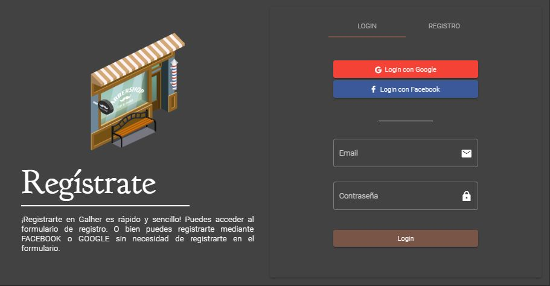

<section id="projects" fxLayout="column">
  <mat-toolbar color="primary" [ngStyle.lt-md]="{'margin-top.px': 80}">PROYECTOS</mat-toolbar>
  <div class="cards_container" fxLayout="column" fxLayoutAlign="center center" fxLayoutGap="2em">
    <mat-card>
      <div class="image_container">
        
      </div>
      <mat-card-content fxLayout="column" fxLayoutGap="1em">
        <div class="title" fxLayout="row" fxLayoutAlign="space-between center">
          <div>Galher Barber Shop</div>
          <button width="20px" mat-icon-button [matMenuTriggerFor]="menu">
            <mat-icon>more_vert</mat-icon>
          </button>
        </div>
        <div class="description">
          PWA para gestión de reservas en barbería
        </div>
        <ul>
          <li>API REST Spring</li>
          <li>PWA Angular</li>
          <li>Angular Material</li>
          <li>Fx Flex Angular</li>
        </ul>
      </mat-card-content>
    </mat-card>
  </div>
</section>
<mat-menu #menu="matMenu">
  <button fxLayoutAlign="start baseline" fxLayoutGap="0.5em" mat-menu-item>
    <i class="fas fa-external-link-alt icon"></i>
    <a href="https://www.galherbarbershop.com/reservas" target="_blank"><span class="text">Abrir</span></a>
  </button>
  <button fxLayoutAlign="start baseline" fxLayoutGap="0.5em" mat-menu-item>
    <i class="fab fa-github icon"></i>
    <span class="text">Github</span>
  </button>
</mat-menu>
